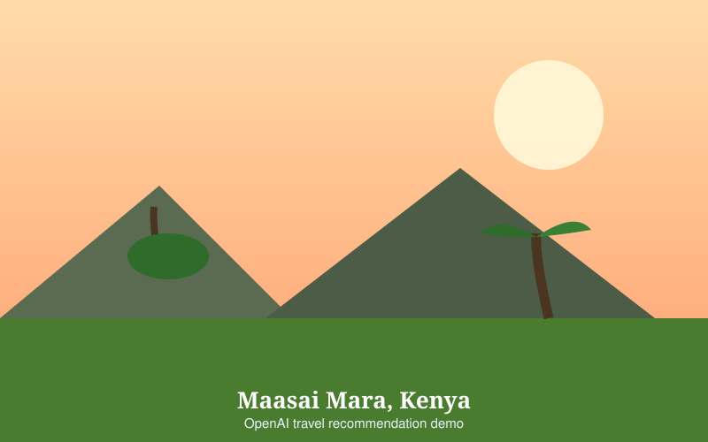
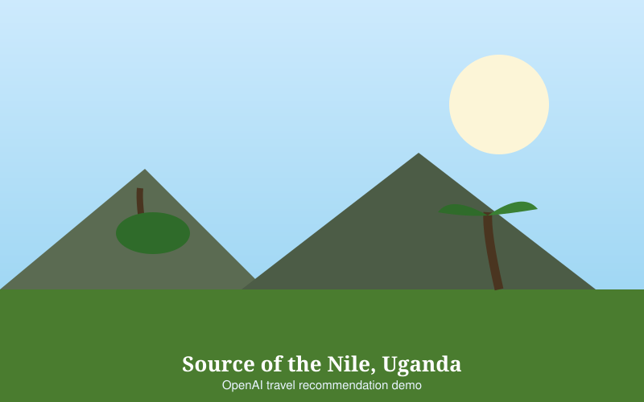
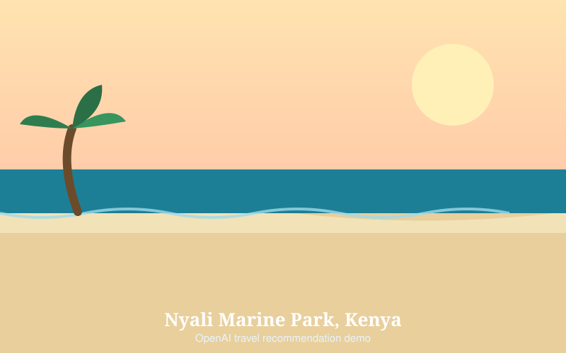

About Us
Wanderly is a small travel recommendation site built to answer one question honestly: given how you like to travel, where should you actually go?
Our mission
To make trip planning honest. Most travel advice is written by people paid to send you somewhere, and the problems — long queues, closed roads, seasons to avoid, dress codes — get left out. We publish the problems alongside the photographs, because a trip you plan around the reality is better than one you did not.
Who we are

Wanderly is a student-built project. There is no company behind it and no booking engine — you will not be sold anything, and the site takes no payment details.
What we do have is time and a stubbornness about accuracy. Every destination on this site was chosen because it is genuinely worth travelling for, and every one of them carries an honest note: the crowd size, the season to avoid, the currents, the worn carvings. Travel websites usually leave that out.
Meet the team

Mark Nkugwa
Design and development
Built the pages, wrote the JavaScript, and researched the destinations.

Research and content
Destinations and copy
Researched each destination, wrote the honest notes, and checked the details.
What we recommend on
- Worth the journey. If a place is only a good idea if you already live nearby, we do not list it.
- Reachable from East Africa. Flights from Entebbe and Nairobi matter more than worldwide fame.
- Honest conditions. Every entry states what is difficult, not only what is beautiful.
- Respect for local custom. Temple entries state the dress code and visiting etiquette up front.
How the site works
Wanderly is built with plain HTML, CSS and JavaScript — no framework and no build step, so it loads quickly and you can read exactly how it does what it does.
- Pick a preference. Beaches, temples, wildlife or cities. This highlights your best matches and updates the recommendation panel.
- Browse the categories. Each card has two images, when to go, who it suits, and the honest note. Read more expands further detail without leaving the page.
- Choose a country. The country selector uses JavaScript to replace the results on the same page — no reload, no new tab.
- Send a message. The contact form checks what you typed before it lets you send, so you do not lose a long message to a typo.
Guidance for team members
Everything a new person needs to work on this site without asking anyone.
Where things live
| index.html | Home page — introduction, preference finder, and the three recommendation sections |
|---|---|
| about.html | This page |
| contact.html | The contact form |
| css/styles.css | All styling. Colours and spacing use the variables at the top of the file |
| js/main.js | All behaviour, in six clearly labelled sections |
| images/ | 16 SVG illustrations, named after the destination |
Running it locally
Open index.html directly in a browser, or serve the folder so
relative paths behave:
python3 -m http.server 8000
Then open http://localhost:8000. There is nothing to install
and nothing to compile.
Adding a new destination
- Add the SVG to
images/, named in lowercase with hyphens —images/kenya-lamu.svg. - For a beach or temple card, copy an existing
<article class="card">block inindex.htmland change its image, heading, text anddata-category. The card must keep that attribute or the preference filter will ignore it. - For a country, add an entry to the
COUNTRIESobject injs/main.js. Give it ablurband aplacesarray holding two objects, each withtitle,imgandnote. - Add the
<option>to#countrySelectinindex.html, using the same key as theCOUNTRIESentry.
Always write an honest note. Every destination on this site states what is difficult about it — crowd size, season to avoid, currents, worn carvings. Do not add a destination without one.
House rules
- No dependencies. Plain HTML, CSS and JavaScript only. Do not
add a framework or a
package.json. - No external images. Everything is a local SVG so the site cannot break on someone else's network.
- Keep the navigation identical on all three pages. If you add a link, add it everywhere. The search bar belongs in the nav too, and must keep its input, Search button and Clear button.
- Every image needs alt text that describes the picture, not the file name.
- Mark up semantically — one
<h1>per page, real headings in order. - Comment the JavaScript. Each section carries a header explaining what it does.
Before you submit
- Open all three pages and click every link — nothing should 404.
- Submit with the
https://prefix included, or the submission breaks. - Test the live Pages URL in your own browser before handing it in.
Technologies used
| HTML5 | Semantic page structure, accessibility labels, and one page per section |
|---|---|
| CSS3 | Flexbox and grid layout, responsive down to a phone screen |
| JavaScript | Navigation state, preference filtering, country selector, expand/collapse, form validation |
| SVG | All 16 images are original vector illustrations drawn for this project |
Corrections and suggestions
If something on this site is wrong — a road is closed, a temple has changed its visiting rules, a beach has had a building put in front of it — we want to know. That is what the contact page is for.
Back to recommendations